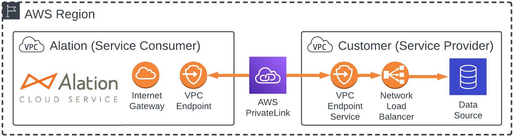

AWS PrivateLink with Alation Cloud Service¶
Alation Cloud Service Applies to Alation Cloud Service instances of Alation
Amazon’s AWS PrivateLink allows for secure connections between Alation Cloud Service and your AWS-based data sources.
AWS PrivateLink Overview¶
AWS PrivateLink is a networking service that provides secure connectivity between AWS virtual private clouds (VPCs), supported AWS services, and your on-premises networks without exposing your traffic to the public internet.
With PrivateLink, you can connect native AWS services and partner services, like Alation, to other AWS services, like your data sources that run in AWS. PrivateLink connections stay within AWS boundaries, so traffic through PrivateLink isn’t exposed to the public internet. Data is only transmitted to Alation in response to requests from Alation Cloud Service.
Architecture¶
The following diagram summarizes the architecture of the PrivateLink networking option. Your data source’s VPC is the provider, and Alation’s VPC is the consumer. See Amazon’s PrivateLink documentation for more information about these concepts.
Permissions¶
PrivateLink does not interact or interfere with Alation Identity and Access Management (IAM) settings or permissions. In terms of the seven-layer network model, PrivateLink operates primarily at the network layer, while Alation IAM settings and permissions operate at the application layer.
However, you must add permissions that allow specific AWS principals to create an interface VPC endpoint to connect to your endpoint service. This is documented below.
Set Up PrivateLink¶
Follow this procedure to create an AWS PrivateLink connection between Alation Cloud Service and a data source located in an AWS virtual private cloud (VPC).
The overall process involves three main steps:
-
Warning
This final step involves some back-and-forth between you and Alation Support. It also requires your Alation instance to be restarted, which will result in brief downtime. You’ll be able to arrange an appropriate time for Alation Support to restart your instance.
Prerequisites¶
Your data source must be in an AWS virtual private cloud (VPC) that’s in the same AWS region as your Alation Cloud Service instance.
You need the IP address and port of the data source you’re connecting to.
Create a Network Load Balancer in Your AWS Account¶
A network load balancer forwards incoming PrivateLink traffic to your data source. You can forward traffic to multiple data sources if needed. To create a network load balancer:
In the AWS Console, go to EC2.
Click Load Balancers.
Click Create load balancer.
Choose Network Load Balancer.
Click the Create button.
Fill out the Basic configuration section:
For Load balancer name, enter a name that’s unique within your AWS account.
For Scheme, select Internal.
For IP address type, select IPv4.
Fill out the Network mapping section:
Select the VPC where your data source is located.
Under Mappings, select the availability zones where your data source is located.
In the Listeners and routing section, choose the protocol and port for the connection coming into your load balancer.
If you have an existing target group with your data source in it, select it and proceed to the final step. Otherwise, click Create target group. A new tab will open. Fill out the following information:
Select IP addresses.
Enter a Target group name.
Choose the protocol and port that’s listening on your data source.
Select the VPC where your data source is located.
Click Next.
Enter the IP address and port that’s listening on your data source, then click Include as pending below.
Note
If the IP address of your data source changes for any reason, you’ll have to update your load balancer to route traffic from Alation to the new IP address.
Click Create target group.
Once the target is healthy, return to the load balancer tab.
Repeat the prior two steps for any additional data sources you may have.
Click Create load balancer.
For increased availability, scalability, and fault tolerance, we recommend turning on cross-zone load balancing:
Click View load balancer to return to the list of your load balancers.
Under Load balancers, click on the name of your load balancer to edit it.
Click the Attributes tab.
On the Attributes tab, click the Edit button.
Enable the Cross-zone load balancing toggle.
Click the Save changes button.
Once you’ve created a network load balancer, you need to create an endpoint service and associate it with the load balancer.
Create an Endpoint Service in Your AWS Account¶
In the AWS Console, go to VPC.
Click Endpoint services.
Click Create endpoint service.
Enter a name.
For Load balancer type, select Network.
Select the load balancer you created. If you just created it, it may take some time to become available.
Click Create.
Once the endpoint is created, take note of the Service name. You will need to provide the service name to Alation.
Now that you have an endpoint service connected to a network load balancer, you will work with Alation to establish the connection between Alation and your data source.
Establish the Connection¶
After creating the network load balancer and endpoint service, you will need to work with Alation Support to establish the connection between Alation and your data source.
Open a support ticket with Alation Support and provide the following information:
Subject: AWS PrivateLink support requested
Body:
Provide the endpoint service name.
Provide the port for connections coming into your load balancer (from step 8 under Create a Network Load Balancer in Your AWS Account).
When Alation gets the support ticket, we’ll send you an Amazon resource name (ARN) for the required IAM role.
Add the provided IAM role ARN as a principal to your endpoint service:
Navigate to the endpoint service you created.
Click the Allow principals tab, then the Allow principals button.
Enter the ARN that Alation gave you.
Click Allow principals.
Notify Alation that you’ve entered the IAM role ARN.
Alation will set up an endpoint in Alation Cloud Service, initiate the connection, restart your Alation instance, and notify you that it’s ready. We’ll also send the DNS name for the endpoint (you’ll need it later for setting up your data source in Alation).
Warning
This step will require your Alation instance to be restarted, which will cause downtime. Arrange for an appropriate time with Alation Support.
Accept the incoming connection from Alation:
Navigate to the endpoint service you created.
Click the Endpoint connections tab. You should see a new endpoint listed.
Select the endpoint.
Click Actions.
Click Accept endpoint connection request.
In the confirmation that appears, type accept in the provided box, then click the Accept button. The VPC endpoint state will change to Available.
Your PrivateLink connection should now be active. Proceed to add your data source(s) to Alation as described below.
Add a PrivateLink-based Data Source in Alation¶
Once you’ve set up PrivateLink, the process for adding a PrivateLink data source in Alation is essentially the same as adding any other data source, with a few minor differences.
Host and Port¶
When adding your data source in Alation, the host name and port for the data source depends on your PrivateLink configuration.
For the host name, use the DNS name that Alation provided when establishing the connection (see step 2 under Establish the Connection). This host name is unique to PrivateLink. If you don’t know the host name, contact Alation Support.
For the port, use the port for connections coming into your network load balancer (from step 8 under Create a Network Load Balancer in Your AWS Account).
Note
For SQL Server data sources on PrivateLink, you may need to add trustServerCertificate=true to the connection string. This may be necessary if the SQL Server certificate has a domain name that’s different from the VPC endpoint address.
Test the Connection¶
When you’re done configuring your data source and endpoint service settings, test that the connection works. On the data source settings page, go to the General Settings tab and find the Test Connection or Network Connection section. Click the Test button.
If the test is successful, you can now use the data source for metadata extraction, query log ingestion, sampling, and profiling.
If the test fails, read the error message for information about what went wrong. Double check your connection information, such as the host name and port, and update it if needed. If you can’t troubleshoot the error on your own, contact Alation Support.
Help with Adding Data Sources¶
For help with adding OCF data sources, see the Open Connector Framework section of the docs, then scroll down to find your specific data source.
For help adding native connectors, see Add Data Sources.
Add a New PrivateLink-based Data Source in AWS¶
If you’ve already set up a data source using PrivateLink in the past, you can add new data sources to your existing PrivateLink connection. A single PrivateLink connection can typically support up to 50 data sources, depending on your network configuration and traffic.
In the AWS Console, go to EC2.
Click Load Balancers.
Select the load balancer for your PrivateLink connection.
In the Listeners section, click Add listener.
If you have an existing target group with your data source in it, select it. Otherwise, click Create target group. A new tab will open. Fill out the following information:
Select IP addresses.
Enter a Target group name.
Choose the protocol and port that’s listening on your data source.
Select the VPC where your data source is located.
Click Next.
Enter the IP address and port that’s listening on your data source, then click Include as pending below.
Note
If the IP address of your data source changes for any reason, you’ll have to update your load balancer to route traffic from Alation to the new IP address.
Click Create target group.
Once the target is healthy, return to the load balancer tab.
See Add a Data Source in Alation for remaining steps to set up your data source.
Migrate PrivateLink to Alation’s Cloud Native Architecture¶
When you migrate to Alation’s cloud native architecture, your Alation instance will move to a new VPC. You will need to make some configuration changes during the migration to ensure your PrivateLink data sources continue to work. These changes are described below.
Note
The exact migration steps may vary. For example, the Alation engineer handling your migration may ask you to accept the new endpoint connection before migration instead of afterward. Work with your Alation account manager and Alation Support to determine the exact steps and schedule.
Endpoint Service Settings¶
Before migrating to Alation’s cloud native architecture, you’ll need to update your PrivateLink configuration to prepare for the migration. You’ll need to accept a new incoming endpoint connection. In some cases, you may also need to add a new Amazon resource name (ARN) to your endpoint service.
To reconfigure PrivateLink before migrating to Alation’s cloud native architecture:
If needed, Alation will provide you a new Amazon resource name (ARN) for the required IAM role. Add the provided IAM role ARN as a principal to your endpoint service:
In the AWS Console, go to VPC.
Click Endpoint services.
Select the endpoint service you created.
Click the Allow principals tab, then the Allow principals button.
Enter the ARN that Alation gave you.
Click Allow principals.
Notify Alation that you’ve entered the IAM role ARN.
Alation will initiate a new connection and migrate your Alation instance to the cloud native architecture. Your Alation instance will be offline during this process. We will notify you when it’s back online.
Accept the incoming connection from Alation:
Navigate to the endpoint service you created.
Click the Endpoint connections tab. You should see a new endpoint listed.
Select the endpoint.
Click Actions.
Click Accept endpoint connection request.
In the confirmation that appears, type accept in the provided box, then click the Accept button. The VPC endpoint state will change to Available.
Data Source Settings¶
Once Alation has set up the new endpoint, we may send you a new DNS name for the data source. On the data source settings page in Alation, go to the General Settings tab and update the host name with the DNS name we provided.
If a private DNS name was previously created, it will remain the same, and you won’t need to update your data source settings.
Test the Connection¶
When you’re done configuring your data source and endpoint service settings, test that the connection works. On the data source settings page, go to the General Settings tab and find the Test Connection or Network Connection section. Click the Test button.
If the test is successful, you can now use the data source for metadata extraction, query log ingestion, sampling, and profiling.
If the test fails, read the error message for information about what went wrong. Double check your connection information, such as the host name and port, and update it if needed. If you can’t troubleshoot the error on your own, contact Alation Support.
Limitations¶
Data Source Location¶
To use PrivateLink, your AWS-based data sources must be located in an AWS virtual private cloud (VPC) in the same AWS region as your Alation Cloud Service instance. To determine which AWS region your Alation Cloud Service instance is located in, contact your Alation account manager.
PrivateLink connections with data sources that are located on-premises, in cloud systems other than AWS, or in a different AWS region than your Alation Cloud Service instance aren’t supported by Alation at this time.
Number of Connections¶
You’re limited to one PrivateLink connection per Alation Cloud Service instance. A single PrivateLink connection can typically support up to 50 data sources, depending on your network configuration and traffic.